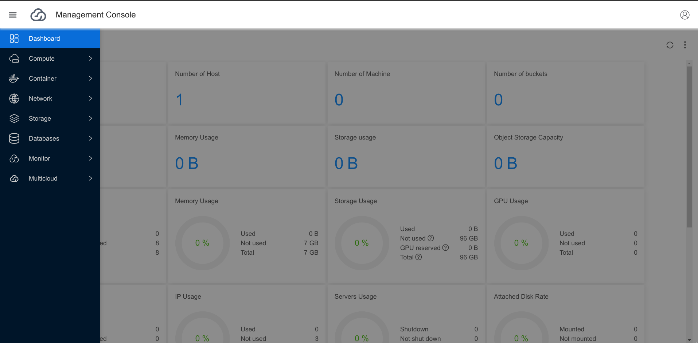
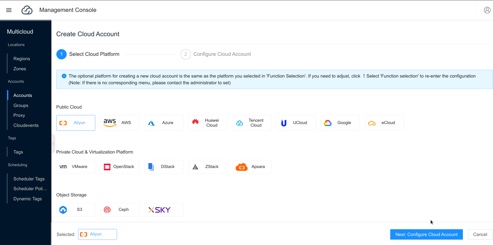
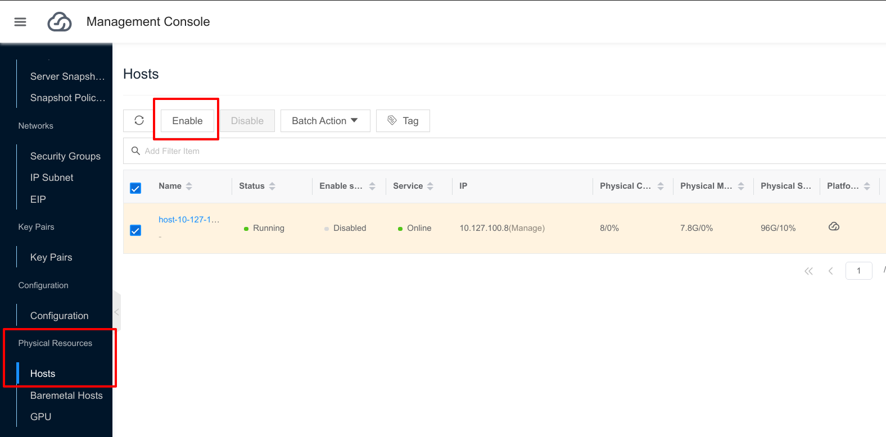
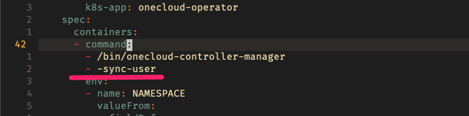

All in One Installation
Environmental Preparation
Configuration Requirements
- OS: CentOS 7.6
- Minimum Configuration Requirements: CPU 4 cores, Memory 8G, Storage 100G
The following is the environment of the machine to be deployed:
| IP | Login User | OS |
|---|---|---|
| 10.168.26.216 | root | CentOS 7.6 |
Tips
10.168.26.216 is the IP of this test environment, please modify accordingly according to your own environment.
Related Software Dependencies
- database: mariadb Ver 15.1 Distrib 5.5.56-MariaDB
- docker: ce-19.03.9
- kubernetes: v1.15.8
Local environment requirements
The local environment is the environment where the user performs the actual operation and deployment. The local environment for this installation is executing on a MAC OS laptop, which can also be operated on the machine to be deployed.
Configure SSH unencrypted login
# Generate the local ssh keypair
# (SKIP this stekp if you already have ~/.ssh/id_rsa.pub locally)
$ ssh-keygen
# Copy the generated ~/.ssh/id_rsa.pub public key to the machine to be deployed
$ ssh-copy-id -i ~/.ssh/id_rsa.pub root@10.168.26.216
# Try to login to the machine to be deployed without password,
# should be able to get the hostname of the deployed machine
# without entering the login password
$ ssh root@10.168.26.216 "hostname"
Start Installation
The installation tool is https://github.com/yunionio/ocboot , then according to the configuration of the machine to be deployed, use ansbile playbook to install and configure the Yunion OneCloud platform. The following operations are performed on the local environment and steps are as follows:
Download ocboot
# Install ansible locally
$ yum install -y epel-release ansible
# Git clone the ocboot installation tool locally
$ git clone -b release/3.6 https://github.com/yunionio/ocboot && cd ./ocboot
# Install ansible locally
$ pip install ansible
# Git clone the ocboot installation tool locally
$ git clone -b release/3.6 https://github.com/yunionio/ocboot && cd ./ocboot
Write deployment configuration
# Write config-allinone.yml configuration file
$ cat <<EOF >./config-allinone.yml
# mariadb_node indicates the node where the mariadb service needs to be deployed
mariadb_node:
# IP of the machine to be deployed
hostname: 10.168.26.216
# SSH Login username of the machine to be deployed
user: root
# Username of mariadb
db_user: root
# Password of mariadb
db_password: your-sql-password
# primary_master_node indicates the machine running Kubernetes and OneCloud Platform
primary_master_node:
hostname: 10.168.26.216
user: root
# Database connection address
db_host: 10.168.26.216
# Database connection username
db_user: root
# Database connection password
db_password: your-sql-password
# IP of Kubernetes controlplane
controlplane_host: 10.168.26.216
# Port of Kubernetes controlplane
controlplane_port: "6443"
# Yunion OneCloud version
onecloud_version: 'v3.6.9'
# Yunion OneCloud login username
onecloud_user: admin
# Yunion OneCloud login user's password
onecloud_user_password: admin@123
# This machine serves as a Yunion OneCloud private cloud computing node
as_host: true
EOF
Start Deployment
Once the config-allinone.yml deployment configuration file is filled in, you can execute the ocboot file . /run.py . /config-allinone.yml to deploy the cluster.
# Start deployment
$ ./run.py ./config-allinone.yml
....
# The following output will be displayed when the deployment is completed,
# indicating successful operation
# Open with your browser at https://10.168.26.216
# Login with admin/admin@123 user password to access the Web UI
Initialized successfully!
Web page: https://10.168.26.216
User: admin
Password: admin@123
Then use your browser to visit https://10.168.26.216, enter admin for username and admin@123 for password and you will see the Web UI.

Create the first virtual machine
The first virtual machine is created in three steps as follows.
1. Import Images
Browse to CentOS 7 cloud hosting image, select a GenericCloud image, and copy the image URL.
In the Compute menu, select Images then select Upload menu. Enter the image name, select Enter the image URL, paste the above CentOS 7 image URL and select OK.
Additional virtual machine images can be obtained by visiting https://docs.openstack.org/image-guide/obtain-images.html.
2. Create networks (VPC and IP subnets)
- Create VPC
In the Network menu, select the VPC submenu and choose Create. Enter a name, e.g. vpc0, and select the target segment, e.g. 192.168.0.0/16. Click Create.
- Create IP Subnetes
After the VPC is created, select the IP Subnets submenu and choose Create. Enter a name, for example vnet0, select VPC as the VPC you just created vpc0, select the available zone. Enter subnet segment, e.g. 192.168.100.0/24. Click Create.
3. Create Virtual Machine
In the Compute menu, select Servers and choose Create. In this UI, enter the hostname, select the mirror and IP subnet, and create the virtual machine.
Import public cloud or other private cloud platform resources
Yunion OneCloud itself is a complete private cloud, and can also unify and manage resources from other cloud platforms.
In the Multicloud menu, select Accounts and create a new one, fill in the authentication information of the corresponding cloud platform according to your needs, and after configuring the cloud account, the Yunion OneCloud service will synchronize the resources of the corresponding cloud platform, and you can view them in the Web UI after the synchronization is completed.

FAQ
1. Can’t find the virtual machine menu in Web UI?
Machine deployed using the All in One way is treated as Yunion OneCloud private cloud computing node by default, which has the ability to create and manage virtual machines.
If there is no virtual machine creation button it should be that the private cloud computing node is not enabled.
Please go to the Web UI, click Compute/Physical Resources/Hosts to view the list of hosts, enable the corresponding hosts, refresh the interface and the virtual machine creation button will appear.
Attention
If you want to use Yunion OneCloud private cloud, you need ensure the computing machine use the kernel compiled by us. You can use the following command to check whether the host uses the kernel including the yn keyword.
# Check if yn keyword kernel is used
$ uname -a | grep yn
Linux office-controller 3.10.0-1062.4.3.el7.yn20191203.x86_64
# If the kernel is not the version with the yn keyword,
# it may be the first time you install it using ocboot,
# and you can reboot into the yn kernel
$ reboot

2. Change the hostname of the node, some services fail to start
Yunion OneCloud uses Kubernetes management node, depends on hostname, please change it back.
3. How to reinstall
-
SSH login the remote machine, execute the command
ocadm reset -f. -
Rerun ocboot
run.pyscript. -
Waiting for the run to finish，use command
kubectl edit deployment onecloud-operator -n onecloud. Add the following parameters, then save to close.

- The modification in step 3 will affect the performance of onecloud-operator, so you can restore the parameters in step 3 when all services are started.
4. Other questions？
Other questions are welcome to submit Yunion OneCloud github issues: https://github.com/yunionio/onecloud/issues , we will reply as soon as possible.
Feedback
Was this page helpful?
Glad to hear it! Please tell us how we can improve.
Sorry to hear that. Please tell us how we can improve.